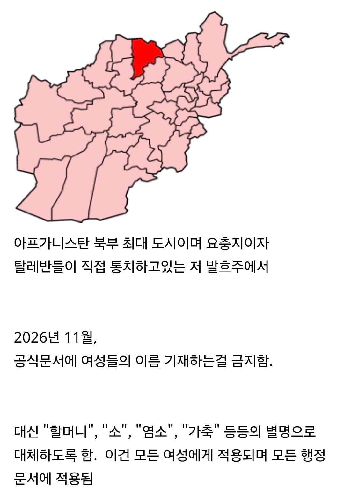
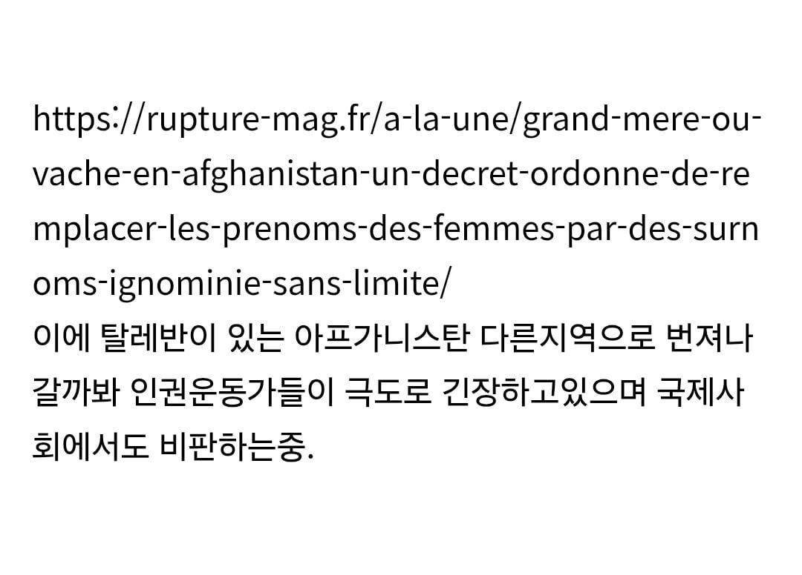

https://rupture-mag.fr/a-la-une/grand-mere-ou-vache-en-afghanistan-un-decret-ordonne-de-remplacer-les-prenoms-des-femmes-par-des-surnoms-ignominie-sans-limite/
뭐 저런데가 다있냐


https://rupture-mag.fr/a-la-une/grand-mere-ou-vache-en-afghanistan-un-decret-ordonne-de-remplacer-les-prenoms-des-femmes-par-des-surnoms-ignominie-sans-limite/
뭐 저런데가 다있냐
우리나라보다 여성인권높음
여자를 가축 취급하는거임? 저기동네는 도데체 뭐가 문제야 ㅅㅂ
인도가 건국 초기에 외부사람에게 여자가 이름을 말하는 걸 꺼리는 문화가 있어서 선거인단명부 만들기 어려웠다고 하던데,
저긴 대체 몇년도에 사는 건가;;;;
소름돋는게 진짜 여성인권 순위 통계에서 우리나라 127위고 저기가 129위네 ㅋㅋㅋ 2위차이 ㅋㅋㅋㅋㅋㅋㅋ
우리가 127위임? 성평등 지수가 아니라?
무함마드가 원래 백수였는데, 돈많고 나이많은 과부 만나서 일안하니깐 돈받고 놀면서 만든게 이슬람교라서그런지 여자에 대한 열등감이 존나 심했던거 같음, 그래서 이슬람교보면 남자가 우월하고 여자가 열등하다고 계속 찍어누르는거같어, 그전에는 이슬람도 남자랑 여자랑 동등했단 말이지
그건 아니고 중동지역쪽이 원래 유목민+오아시스 사회라 소규모 부족단위로 국가형성이 어려웠고 전쟁도 많았음.
그래서 남자가 많이 죽다보니 재산있는 과부가 많았음. 대신 남자가 적어서 여성의 권리는 바닥에 가까웠음.(만약 전쟁에서 지면 약탈혼)
무함마드 본인이야 뭐 여자끼고 잘 살았지만 이슬람은 당시에는 그래도 나름 여성의 권리를 보장하는 편에 가까웠음
문제는 그걸 통치수단으로 이용하는 쟤들임. 무함마드가 제일 경계한게 저런애들임(일단 범 이슬람적 단결을 굉장히 중시했기 때문)
무함마드가 창시자 아님? 그 전이라는게 있는거야?
ㄹㅇㅋㅋㅋㅋ 말이 준나 모순이네 ㅋㅋㅋㅋ
아니 ㅋㅋㅋ 이슬람교 나오기 전 말하는거지 당연히 ㅋㅋㅋ
저정도면 시발 아프간 내에서도 기겁할 수준이겠는데 ; 파키스탄에서 아프간 파슈툰들 조롱할 때 꼴통 염소박이들이라고 조롱하는데
출산율 ㅈㄴ 높겠는데 ㅋㅋㅋ
60년대만 해도 여자들 스커트입고, 대학다니고, 자유롭게 나다니던 그 아프간이 극단주의 종교로 저 꼴이 났네
그건 이란 아니야?
이란마즘ㅋㅋ아프간은 깜냥안됌
아프간 수도에서는 그러고 다니던 사진 있던데
저긴국가가 아니라 부족체제다
지들은 애미도 없음?
미국이 떠먹여줄 때 잘하지 그랬냐
그저 신실한 무슬림
인류 퇴보의 역병
ㄹㅇ
저건 이슬람하고 상관 없는 저 지역 전통 문화임
현대와서 사라졌다가 이번에 탈래반들이 부활시킨거고
코란에도 여성들 이름 명기 다 해놓다보니 무슬림들도 저 정책에 대해서 부정적임
그건 아는데, 항상 저 꼬라지의 악성 파생품이 '대규모'로 창궐하는건 이슬람임
교리를 현대화할 길을 막아뒀으니 중세시대에서나 볼만한 것들이 계속 나오는거
나주평야, 발발이, 치와와
"평화의 종교"
ㅋㅋㅋㅋㅋㅋㅋㅋㅋㅋㅋㅋ
"소""말""리아"
우리나라 페미언냐들은 뭐하고 있음?
아프간보다 한국 여성인권이 더 낮다고 쿵쾅대는중
ㅋㅋㅋㅋㅋㅋㅋㅋㅋㅋㅋㅋ 이게 지금 이 시대에 발생할 수 있는 일인가 ....
페미특공대 파병해라
이 암캐! 이 암퇘지!
좋은 선진문화 도입해야
100년 전 나라 꼬라지만 겨우 갖춘 부족집단 사우드 왕조가 봐도 기겁할 수준의 미개함
궁금한게 저런나라는 아들이 여자라는 이유로 엄마한테도 쭉탱이 돌려버림??
십자군 이 무능한 새끼들
그럼 수간인거임?
저 나라들에 여성할례라고 클리를 베어 버리는 것도 있음. 물론 병원이 아니라 동네에서 대충 어른이 대충 칼로 스윽
한국도 여성은 이름 없는게 전통이엇는데
개찬난거지
무슨 헛소리여
이름이 기록에 없다고
김씨부인 이씨부인
저기는 남자가 임신하나?
온나.